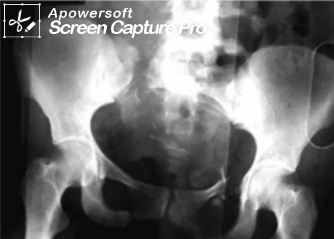
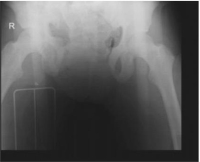
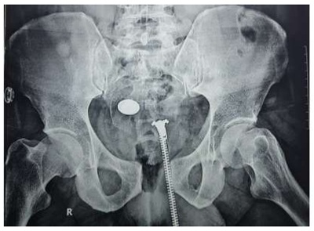
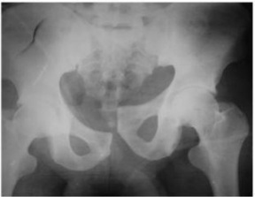
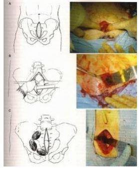
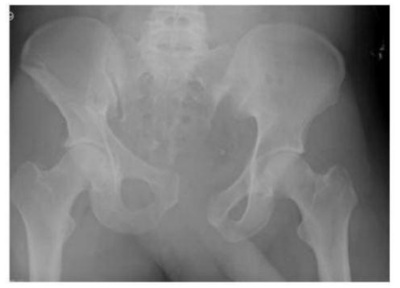
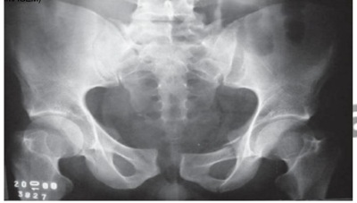
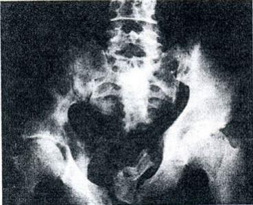

Paciente jovem, vítima de trauma raquimedular no nível de C6, deu entrada na Emergência com frequência cardíaca de 60 bpm e pressão arterial de 40/20 mmHg. Para estabilizar hemodinamicamente o paciente, deve-se
Um motociclista de 22 anos é envolvido em uma colisão com um carro, sendo atendido pela equipe do SAMU 192 que realizou o atendimento inicial conforme o PHTLS (Prehospital Trauma Life Support) e aplicou técnicas de restrição de movimento da coluna. Levado até a sala de emergência tem os seguintes dados na avaliação inicial: A: via aérea pérvia, fala confuso, oxigênio suplementar (12l/min) e colar cervical; B: FR = 28 irpm, simétrica, murmúrio bilateral presente, SaTO2 = 94%, ausência de crepitação óssea e de en sema subcutâneo; C: Sangramento na perna direita controlado com curativo compressivo, pele quente, pulsos radiais palpáveis FC= 70 bpm, enchimento capilar < 2 seg. PA= 84 x 52 mmHg, pelve estável; D: pupilas isocóricas e fotorreagentes, Glasgow = 14; sem movimento motor e sensibilidade dos membros inferiores E: diversas escoriações asfálticas, deformidade no tornozelo E (imobilizado), dorso com escoriações e áreas de dor à palpação. Realizado o eFAST (negativo), Rx de tórax e pelve sem anormalidades. Com base na história clínica descrita, qual a provável origem do choque circulatório?
Homem, 31 anos, vítima de acidente automobilístico há 40 minutos. Ao chegar no Serviço de Emergência trazido pelo SAMU, encontra-se comatoso, entubado, com 7 na escala de Glasgow e hemodinamicamente instável. O murmúrio vesicular é normal bilateralmente. No local do acidente foi utilizada uma calça pneumática, devido fratura instável de pelve e quadro de hipotensão. Iniciou-se reposição volêmica com sangue e após administração de 4 bolsas, sua pressão sistólica permanece ao redor de 80 mmHg. Apresenta hematoma periorbitário à direita, alargamento do mediastino e subluxação entre a terceira e quarta vértebras cervicais. O próximo procedimento aconselhável seria:
Paciente vítima de acidente de moto, deu entrada no hospital de Trauma de Campina Grande, identi cado que ele tinha alteração de sensibilidade ao nível dos mamilos. Qual o nível da lesão raquimedular? E o exame que você solicita para diagnóstico?
Revisar: possível letra faltando em enunciado
Paciente traumatizado com suspeita de trauma raquimedular apresenta di culdade de extensão de joelho ao exame neurológico. Qual o nível de lesão?
Paciente de 32 anos, vítima de queda de moto em alta velocidade, apresenta em sua chegada sinais de choque medular com ausência do reflexo bulbocavernoso e dé cit neurológico de membros inferiores classificado como Frankel A. Após 24 horas de internação, mantém o dé cit inalterado e evolui com retorno do reflexo bulbocavernoso. Qual o prognóstico do paciente?
Um motociclista de 24 anos, vítima de colisão com auto em alta velocidade, chega ao pronto-socorro imobilizado em prancha rígida, com colar cervical, e lençol contendo a pelve. Está em ventilação espontânea, com máscara de oxigênio, tendo saturação de 95%. A via aérea está pérvia e a ausculta pulmonar é normal. Recebeu já 1 litro de soro siológico aquecido. Pulso: 140 bpm, rítmico; PA: 60 × 40 mmHg; tempo de enchimento capilar: 5 segundos, frequência respiratória: 18 irpm; Glasgow: 14; pupilas isofotorreagentes. A pelve é instável e tem deformidade na coxa direita. Os pulsos periféricos são muito fracos, liformes, mas estão presentes. O toque retal não tem alterações. O FAST (focused assessment with sonography for trauma) é negativo. Conduta, neste momento:
Um paciente masculino sofreu um traumatismo raquimedular e durante o exame físico é diagnosticada sensibilidade no sentido céfalo-caudal até a cicatriz umbilical. O dermátomo responsável pela sensibilidade nesse marco anatômico é:
Num paciente politraumatizado, qual das fraturas abaixo significa um trauma grave (alta energia) com possível lesão de vários sistemas e elevada mortalidade?
Sobre os traumatismos raquimedulares em pediatria, julgue os itens a seguir. I. Os traumas raquimedulares sem lesão radiográ ca são mais comuns em crianças que em adultos e se apresentam em duas formas distintas, de acordo com a faixa etária acometida. II. Os traumas raquimedulares sem lesão radiográ ca costumam decorrer de traumas mais graves, quanto maior a idade de ocorrência. III. As lesões medulares mais graves podem transcorrer com choque espinal, que pode persistir por até 4 semanas após o trauma. IV. Mesmo em lesões medulares graves, menos de 10% dos pacientes costumam apresentar trauma craniano associado. Pode-se afirmar que:
Revisar: possível letra faltando em enunciado
Um paciente de 32 anos de idade é levado à sala de trauma pelo Corpo de Bombeiros 25 minutos após ser vítima de acidente de moto versus anteparo. Testemunhas disseram que o paciente foi arremessado a uma distância de cerca de 10 metros, e que ele usava capacete. Na cena, estava eupneico e mantinha nível de consciência normal. Durante o transporte, começou a queixar-se de ""falta de ar"". A avaliação inicial do plantonista da sala de trauma foi a seguinte: A - vias aéreas pérvias, com colar cervical; B - taquidispneico, FR = 54 irpm, murmúrios audíveis e simétricos em ambos hemitóraxes, SpO2 = 93%; C - FC = 130 bpm, PA = 89 mmHg x 68 mmHg, bulhas cardíacas abafadas, escoriações no abdome e nos membros, sem sangramento ativo. Toque retal sem alterações; D - Abertura ocular ao chamado, fala confusa, localizava dor. Pupilas isocóricas e fotorreagentes; E - Membro inferior esquerdo encurtado e em rotação lateral, com dor à manipulação. Coluna sem dor à palpação. Com base nesse caso clínico e nos conhecimentos médicos correlatos, julgue o item a seguir. As alterações do membro inferior descritas sugerem fratura de tíbia que deve ser imobilizada até que se possa realizar a fixação.
Assinale a alternativa CORRETA em relação ao Trauma Raquimedular (TRM) na infância:
São critérios para definir baixa probabilidade de lesão raquimedular todos os abaixo, EXCETO:
Um paciente foi levado ao serviço de emergência após ter sofrido acidente automóvel versus poste. Na admissão, apresentava dor à palpação de sín se púbica, sín se púbica aberta, crepitação à mobilização da pelve, uretrorragia, pressão arterial de 90 x 70 mmHg e frequência cardíaca de 120 batimentos por minuto. A respeito desse caso hipotético, assinale a alternativa correta.
Um menino de dez anos de idade sofreu uma queda de uma laje e foi levado ao setor de emergência pediátrica com diminuição importante da força muscular nos quatro membros, reflexos osteotendíneos abolidos, pupilas isocóricas e fotorreagentes, escala de coma de Glasgow de 15, sem fraturas aparentes, com boa dinâmica respiratória, mantendo saturação de oxigênio de 95% em ar ambiente, frequência cardíaca de 128 bpm e pressão arterial de 80 x 50 mmHg. Com base nesse caso hipotético, é correto afirmar que
Sobre o trauma pélvico, é incorreto afirmar:
Dentre as lesões de tronco e cervical decorrentes do uso dos dispositivos de contenção, qual das alternativas abaixo NÃO está associada ao uso do cinto de três pontos?
Segundo a classificação de Young-Burgess de fraturas pélvicas, o tipo de fratura que mais está associado a perdas sanguíneas é: (CL = compressão lateral; CAP = compressão anteroposterior; CV = cisalhamento vertical)
As lesões espinhais, com ou sem dé cit neurológico, devem ser sempre consideradas em doentes vítimas de traumas múltiplos. Assinale a alternativa INCORRETA.
Sobre o choque medular e neurogênico após o trauma raquimedular, todas as a rmativas abaixo são verdadeiras, EXCETO: (TRM)
Idoso vítima de atropelamento, com fratura instável de ossos da bacia e pequena quantidade de líquido livre em abdome, instável hemodinamicamente, levada ao centro cirúrgico e submetido ao tamponamento extraperitoneal. Qual deve ser a conduta inicial do ortopedista?
Paciente masculino, 22 anos, encaminhado ao serviço de Pronto Socorro pelo Serviço Médico de Urgência (SAMU), vítima de acidente motociclístico há trinta minutos, tendo colidido com poste de energia elétrica. À admissão: regular estado geral; pressão arterial 90 x 55 mmHg; frequência cardíaca 60 batimentos por minuto; frequência respiratória 14 movimentos por minuto; consciente; contactuando, referindo dor precordial intensa. Escala de coma de Glasgow igual a 15. Ausência de motricidade em membro inferior direito e de sensibilidade abaixo do plano da sín se púbica no membro inferior esquerdo. A lesão produziu hemisecção medular
Com relação ao trauma fechado com fratura de pelve, assinale a alternativa correta.
Homem, 22 anos, vítima de acidente de auto x auto, chega à sala de emergência do pronto-socorro reclamando de muita dor na região abdominal inferior e pélvica. Está muito descorado e seus parâmetros vitais são pressão arterial de 85 x 65 mmHg, pulso de 130 bpm e frequência respiratória de 22 mr/m. Ao exame físico, as vias aéreas são pérvias, murmúrio vesicular presente bilateralmente e simétrico. A palpação abdominal mostra pelve instável e uretrorragia. É iniciada a reposição volêmica com 1000 mL de Ringer lactato aquecido. O exame de FAST (ultrassonogra a focada no trauma) mostra líquido livre no recesso hepatorrenal, esplenorrenal e na pelve. A radiogra a da pelve é mostrada a seguir. Após reposição volêmica, assinale a alternativa correta em relação ao manejo desse paciente.

A Síndrome Central da Medula é caracterizada por:
Assinale a associação correta entre o tipo de fratura e sua descrição:
Mulher de 33 anos de idade foi atropelada por automóvel, há 30 minutos. Ela foi atendida no local do acidente pela equipe avançada do resgate. No início do atendimento no local do acidente, a paciente estava inconsciente, com pressão arterial = 80 x 50 mmHg; frequência cardíaca = 110 bpm. Naquele momento, foi realizada a intubação orotraqueal e administrado 1 litro de cristaloide em acesso venoso periférico. O resgate trouxe a paciente ao pronto-socorro de um hospital terciário. Foi admitida no pronto-socorro com pressão arterial inaudível e frequência cardíaca = 140 bpm. Na sala de emergência, foram realizados FAST e radiogra a de tórax, que resultaram normais, e a radiogra a de bacia que está exibida abaixo. Após a reposição de hemoderivados e fechamento da bacia com lençol, qual é a sequência de condutas adequada ao caso?

Paciente chega ao PS após mergulho em água rasa. No momento apresentando dispneia, ausência de sensibilidade térmica, tátil e dolorosa dos ombros para baixo além de elevação das cúpulas frênicas ao RX de tórax. PAS -80 mmhg. O diagnóstico mais provável, é:
Paciente do sexo masculino, 23 anos, é trazido para avaliação no pronto-socorro, após traumatismo decorrente de mergulho em piscina rasa. Apresenta dispneia e ausência de sensibilidade térmica, tátil e dolorosa dos ombros para baixo. Radiogra a do tórax mostra elevação das cúpulas diafragmáticas. Pressão arterial sistólica = 80 mmHg. Após reposição volêmica inicial de 2000 ml, o paciente persistiu com pressão arterial sistólica de 80 mmHg. Ausculta pulmonar normal. Foi realizada ultrasonogra a abdominal que não evidenciou presença de líquido em cavidade abdominal. A causa mais provável da hipotensão é:
Paciente do sexo masculino, 23 anos, é trazido para avaliação no pronto-socorro, após traumatismo decorrente de mergulho em piscina rasa. Apresenta dispneia e ausência de sensibilidade térmica, tátil e dolorosa dos ombros para baixo. Radiogra a do tórax mostra elevação das cúpulas diafragmáticas. Pressão arterial sistólica = 80 mmHg. O diagnóstico mais provável é:
Após um traumatismo raquimedular, o sinal clínico que caracteriza o término do chamado "choque medular" é o retorno do seguinte reflexo:
Em relação ao trauma vertebromedular marque a alternativa CORRETA:
Sobre as fraturas pélvicas, considere as afirmativas a seguir: I. As lesões por compressão anteroposterior estão mais relacionadas às hemorragias pélvicas; II. As hemorragias decorrentes de fraturas pélvicas resultam, usualmente, da ruptura do complexo osteoligamentar posterior, esgarçamento do plexos venosos pélvicos e, ocasionalmente, rompem o sistema arterial ilíaco interno; III. As fraturas pélvicas resultantes de compressão lateral provocam abertura do anel pélvico e aumentam o volume pélvico, estando geralmente associadas às lesões de uretra membranosa; IV. As fraturas por compressão lateral raramente decorrem de acidentes automobilísticos. Assinale a alternativa correta.
Um senhor de 68 anos sofreu uma queda na sala após escorregar em um tapete, batendo o mento em uma mesa lateral. Ele chegou ao hospital com força grau 0 em membros superiores e grau 2 e 3 em diferentes miótomos de membro inferior. Analise as informações abaixo e assinale a única alternativa CORRETA.
Um rapaz de 38 anos sofreu uma queda de moto. Apresentava-se pálido, frio, diaforético e com pulso liforme. Rapidamente identi cavam-se duas lesões: fratura do fêmur esquerdo e ferida contusa em coxa direita com sangramento externo, extenso. Analise as informações abaixo e assinale a única alternativa CORRETA.
Paciente de 30 anos se envolve em uma colisão automotiva. É socorrida pelo SAMU e levada para a emergência onde as radiogra as confirmam uma fratura pélvica fechada com alargamento de sín se pública. Ela ca hipotensa na sala de emergência. A próxima etapa importante no tratamento seria:
Revisar: possível letra faltando em enunciado
Paciente dá entrada no pronto-socorro e o médico plantonista faz o diagnóstico de choque neurogênico. Com a intenção de oferecer tratamento mais preciso e eficaz já na sala de emergência, o que ocorre nessa situação?
Considerando-se os traumatismos raquimedulares, na lesão medular traumática incompleta ainda existem alguns movimentos voluntários ou sensação abaixo do nível da lesão. Qual a síndrome que ocorre com mais frequência e que tem como característica cursar com tetraparesia que afeta mais os membros superiores e, em mais de 50% dos casos, voltam a deambular e ter controle esfincteriano?
Na avaliação de pacientes vítima de traumatismo-raquimedulares é importante a avaliação motora de dez músculos-chaves nos dois lados do corpo. Um paciente que tem movimento ativo, mas não vence a gravidade, é classificado com grau de força
Na emergência de um Centro de Trauma, você recebe um paciente levado pelo SAMU vítima de colisão frontal moto x carro. Trata-se de um jovem de 17 anos, intubado, com colar cervical e imobilizado na prancha, sem lesões hemorrágicas aparentes, murmúrio vesicular presente bilateral, SatO₂ = 92%; pele pálida, fria e úmida, FC = 138 bpm; PA = 82 x 50 mmHg. Durante o atendimento inicial, é identi cada uma instabilidade pélvica e solicitado um RX na sala de emergência (vide abaixo). Qual a conduta mais adequada para este paciente nessa situação?

Pedro Augusto, 40 anos de idade é transferido de um pequeno hospital de periferia de São Paulo, após receber atendimento inicial por ter sido vítima de acidente por motocicleta. Ao chegar na unidade onde você esta de Plantão, apresenta-se com nível de consciência alterado, 8 na escala de Glasgow, intubado por via nasotraqueal e instável hemodinamicamente. Apresenta murmúrios vesiculares presentes e simétricos em ambos os hemitóraces. No local do acidente foi aplicada uma calça pneumática mantida após a avaliação primária, devido a uma fratura instável de pelve e episódios de hipotensão. Iniciou-se reposição volêmica com cristalóides e sangue e, após a administração de quatro bolsas, sua pressão sistólica permanece em torno de 84 mmHg. Apresenta hematoma periorbitário à esquerda, alargamento de mediastino e subluxação entre a terceira e quarta vértebra cervical. O passo subsequente mais adequado é
Paciente 33 anos, vítima de atropelamento, trazido pelo SAMU da entrada em serviço médico de urgência. Encontrava-se agitado, PA 90x50 mmHg, FC 120 bpm, FR 34 ipm e com cianose de extremidades. Em seus exames de admissão apresenta a imagem a seguir: (Conforme Imagem do Caderno de Questões). Mediante a imagem e dados apresentados qual hipótese diagnóstica e melhor conduta inicial:

Assinale a alternativa que tem associação CORRETA entre o tipo de fratura de coluna vertebral e sua descrição.
No paciente vítima de colisão de moto versus objeto xo, com trauma de pelve e lesão "em livro aberto" (open book), pode-se afirmar que:
No trauma cervical:
Quanto à avaliação da estabilidade pélvica no paciente traumatizado, aponte a alternativa INCORRETA:
Julgue o item a seguir, relativo a condições associadas a pacientes politraumatizados. O choque neurogênico que pode ocorrer no paciente politraumatizado decorre de traumatismo raquimedular e caracteriza- se por queda do retorno venoso, determinado pela vasodilatação periférica, o que gera taquicardia e hipotensão, que não respondem à reposição volêmica em virtude da vasoplegia.
O traumatismo contuso da cabeça e do pescoço é um fator de risco para lesões da artéria carótida e vertebral. O reconhecimento e tratamento precoce dessas lesões podem reduzir o risco de acidente vascular cerebral. As indicações para investigação são amplas, mas os critérios sugeridos para investigação incluem, EXCETO:
A respeito da avaliação do sistema sensorial nos pacientes com trauma vertebromedular, aponte a alternativa que corresponde ao segmento do nervo espinhal inervada pela face medial da perna.
Nos doentes portadores de lesão medular, são encontrados com frequência alguns padrões característicos de lesão neurológica. Sobre a Síndrome de Brown-Séquard, indique a alternativa CORRETA.
A respeito dos dermátomos espinhais avaliados no exame sensorial do trauma vértebro-medular, assinale a alternativa CORRETA:
Sobre o trauma vértebro-medular, indique a opção INCORRETA.
Um homem de 32 anos caiu da laje, de aproximadamente 4 metros de altura, há cerca de 1 hora. Dados no local: P: 120 bpm; PA: 150 × 80 mmHg; Glasgow: 15. Na chegada ao hospital: A: via aérea pérvia, respiração aparentemente normal. B: murmúrio vesicular presente bilateralmente, sem ruídos adventícios; saturação de O2: 96%, com máscara com 15 L O2/minuto, frequência respiratória: 14 incursões respiratórias por minuto. C: frequência cardíaca: 92 bpm, PA: 110 × 90 mmHg, extremidades quentes, tempo de enchimento capilar: 1 s, sem estase jugular; abdome indolor, sem hipersensibilidade; toque retal: esfíncter hipotônico, sem sangue, próstata tocável, regular. Pelve estável. FAST (focused assessment sonography in trauma): negativo. Sondagem vesical: urina clara. D: Glasgow 15, pupilas isocóricas e fotorreagentes, reflexo bulbocavernoso ausente. E: palpação de deformidade dolorosa em coluna vertebral, na transição toracolombar. Tem paraparesia e paraplegia crural com acidez e dé cit de sensibilidade em membros inferiores. Os familiares perguntaram se o paciente ficará definitivamente paraplégico. Melhor resposta:
Uma mulher de 75 anos apresenta-se ao pronto-socorro após um politrauma. Ela tem diminuição de força e sensibilidade nos membros superiores. Ela tem força normal e sensibilidade nas pernas. O diagnóstico mais provável é:
A colisão de veículos, por impacto na traseira, pode ocasionar lesão de:
Nos traumatismos da coluna cervical é correto afirmar que:
Um paciente de 54 anos é vítima de uma colisão frontal a 80 km/h. Ele é o motorista e usava cinto de segurança apenas na cintura. Qual das fraturas de coluna é mais provável nessa condição?
Paciente feminina, 44 anos, vítima de atropelamento por automóvel, dá entrada trazida pelo serviço de atendimento pré- hospitalar. Apresenta fratura instável de ossos da bacia. Mesmo após reanimação volêmica, permanece com instabilidade hemodinâmica; FC: 130; PA: 80/40. Encaminhada ao centro cirúrgico e submetida a tamponamento extraperitoneal com colocação de compressas no espaço extraperitoneal, conforme a figura abaixo. Após o tamponamento extraperitoenal apresentava: FC: 120 e PA: 90/60 (VER IMAGEM). Qual a melhor conduta da equipe da ortopedia em relação à fratura de pelve?

Adolescente de 14 anos estava andando de skate na rua e foi atingida por um motociclista em alta velocidade. Foi atendida pelo Serviço Médico de Urgência (SAMU). Durante avaliação inicial. feita pelo médico assistente, estava consciente, eupnéica e queixava-se de muita dor no pescoço e na coxa direita. Foi colocada na maca e imobilizada com tala inguinopodálica no membro inferior direito e enfaixamento com atadura de crepom na coxa do mesmo lado. Também foi colocado em um colar cervical, visando imobilizar a coluna cervical em extensão. No caso descrito, que lesão mais facilmente poderia levar à transecção medular e ao óbito?
A fratura de “chance” é uma fratura transversal no corpo vertebral comumente encontrada em colisões automobilísticas com contenção apenas pelo cinto abdominal. Estas fraturas estão comumente associadas a:
Paciente masculino, 35 anos, alcoolizado, é trazido ao pronto-socorro pela equipe do SAMU, após sofrer acidente automobilístico. Ao exame: imobilizado em prancha rígida, ventilando espontaneamente com saturação O2 95%, PA = 90 x 40 mmHg e FC = 100 bpm. Durante avaliação neurológica, é evidenciado paralisia de membro inferior direito com sensibilidade térmica e dolorosa preservadas, sinal de Babinski presente à direita, perda de sensibilidade térmica e dolorosa com nível sensitivo em T12, associado à preservação de força muscular em membro inferior esquerdo. Tais achados clínicos são compatíveis com o diagnóstico de:
Uma moça de 20 anos de idade, vítima de colisão de auto, chega ao pronto-socorro hipotensa, mas responde inicialmente à administração de volume. A tomogra a revela subluxação C5/C6 e fratura de ramo púbico. Não tem lesões na cabeça, tórax, abdome, extremidades nem partes moles. Na unidade de tratamento intensivo, volta a apresentar hipotensão. Pulso: 55 bpm, PA: 80 × 50 mmHg, saturação de O2: 99%. Recebe 2 litros de solução cristaloide e a saturação cai para 88%. O enchimento capilar é menor que 2 segundos e as extremidades não estão frias. Melhor tratamento para a hipotensão desta doente, neste momento:
Homem, 22 anos, vítima de queda de moto há 30 minutos, foi atendido pelo SAMU que evidenciou deformidade em membro inferior esquerdo. A equipe de atendimento pré -hospitalar imobilizou o membro na posição que se encontrava. Exame físico: saturação O₂= 100%, FR = 14 ipm, FC = 90 bpm, PA = 120 x 80 mmHg, Escala de Coma de Glasgow = 15. Na avaliação secundária não se palpam os pulsos distais do membro imobilizado. Nesse caso, a conduta é
Na abordagem de pacientes com lesões traumáticas raquimedulares, saber determinar o provável nível de lesão a partir da sensibilidade de superfície é de grande importância. Marque a alternativa que apresenta a correlação correta da primeira com a da segunda coluna: 1ª coluna: (1) C6; (2) T4; (3) T8; (4) S1. 2ª coluna: ( ) Mamilo; ( ) Apêndice xifóide; ( ) Dedo polegar; ( ) Borda lateral do pé.
Homem, 40a, vítima de acidente automobilístico há 30 minutos, foi trazido pelo SAMU à unidade de emergência. Exame físico: descorado 3+/4+, consciente, Glasgow = 13, PA = 70 x 40 mmHg, FC = 140 bpm. Abdome: dor à palpação profunda, sem irritação peritoneal. Bacia: dor à mobilização, com sinal de instabilidade. Exames complementares: Hb = 6 mg/dl, Tomogra a computadorizada: hematoma retroperitoneal e disjunção do anel pélvico de 6 cm. Radiogra as: com fratura fechada da dia sária de fêmur esquerdo. Após infusão de 2.000 ml de cristaloide: FC = 150 bpm e PA = 65 x 35 mmHg. ALÉM DA REPOSIÇÃO VOLÊMICA, A CONDUTA MAIS CORRETA É:
A perda súbita da força nos membros inferiores e da sensibilidade simetricamente abaixo da cicatriz umbilical, em paciente politraumatizado, é fortemente sugestiva de lesão
A pelve é constituída por uma miríade de elementos viscerais, neurológicos e vasculares e de partes moles, protegidos por uma arquitetura óssea disposta em forma de anel, conectado por firmes ligamentos. Sobre os traumatismos da pelve é correto afirmar:
A lesão da medula espinhal ocorre em cerca de 15 a 20% das fraturas da coluna vertebral. Sobre o trauma raquimedular (TRM) é correto afirmar:
O choque neurogênico:
Em relação ao trauma raquimedular, assinale a afirmativa CORRETA.
Paciente feminina de 30 anos, vítima de acidente automobilístico seguido de capotamento, foi levada ao pronto-socorro logo após o acidente. Estava consciente, porém, com membros superiores e inferiores paralisados. O único movimento que fazia com o membros superiores era de exão dos cotovelos. Eles etiam, mas não conseguiam estender. Todas as modalidades de sensibilidade estavam abolidas a partir dos ombros. Fez-se diagnóstico de TRM - Traumatismo Requimedular. O provável nível de lesão é:
Homem de 50 anos, vítima de acidente automobilístico, apresenta a seguinte radiogra a: (VER IMAGEM) Ao exame, está pálido, hipotenso e taquicárdico. Como nenhuma outra lesão foi encontrada, o emergencista presume que o quadro se deva a hematoma retro-peritoneal. Assinale a alternativa correta:

O reflexo bulbocavernoso positivo no trauma raquimedular indica:
M.A.T. 75 anos, vítima de atropelamento por caminhão deu entrada consciente e orientada, referindo dor torácica, desconto respiratório devido colar cervical, dor abdominal difusa, com hematoma em abdômen direito. PA: 80 x 60 mmHg, FC: 160 bpm, Saturação de O²: 90% em Ar Ambiente, MVFD com estertores crepitantes em base pulmonar direito, abdômen distendido, crepitações em palpação da bacia e sudorese fria. Qual é o diagnóstico e a melhor conduta de imediato:
Droga administrada nas primeiras oito horas após traumatismo raquimedular que foi a primeira a demonstrar melhora na recuperação neurológica em humanos é:
"A obtenção de uma história clínica detalhada é essencial em pacientes com lesões no sistema do músculo esquelético para facilitar o diagnóstico e tratamento precisos". A respeito da correlação entre o mecanismo do trauma e as lesões comumente associadas, é correto afirmar:
Paciente sexo masculino, foi vítima de acidente automobilístico há 6 meses, com perda de força imediata em membros inferiores e perda da sensibilidade abaixo do dermátomo T8. Ao exame físico, apresenta-se lúcido, orientado têmporo- espacialmente, paraplegia, sensibilidade tátil e dolorosa preservada até T8, ausência de sensibilidade e controle dos esfíncteres, e hipertonia com hiperreflexia em membros inferiores. Sobre este paciente:
Em relação aos traumas em idosos, analise as afirmativas a seguir: I - Os pacientes idosos necessitam de avaliação e tratamento especiais, em virtude da sua maior taxa de mortalidade após o trauma, mesmo no caso de pequeno trauma. II - É importante considerar controle de dano para os pacientes idosos, pois o tratamento deve ser dirigido para medidas que melhorem a mobilização imediata, dando condições de repouso prolongado. III - As fraturas de anel pélvico em indivíduos com mais de 55 anos estão associadas a um aumento na possibilidade de lesões arteriais e uma maior necessidade de transfusão sanguínea.
Adolescente envolve-se em acidente de moto, achado a 5 metros do local da colisão, e chega à emergência com diagnóstico de choque hipovolêmico. No atendimento inicial e após a realização de exames de imagem, afasta-se a possibilidade de lesão intra-abdominal ou torácica. O Raio X de bacia, mostra “Fratura em Livro Aberto”. Após reposição volêmica adequada, o paciente continua instável hemodinamicamente. A conduta a ser tomada na sequência deve ser:
Homem de 25 anos, vítima de acidente com veículo automotor (sem uso do cinto de segurança), foi atendido no local da capotagem por socorrista e trazido à emergência com imobilização cervical em tábua rígida. Estava consciente (escore 15 na escala de Coma de Glasgow), em ventilação espontânea com saturação de oxigênio de 99%, pressão arterial de 120/80 mmHg e frequência cardíaca de 88 bpm. Sem sinais externos de traumatismo cranioencefálico ou de lesões nos membros, relatou lembrar de todos os fatos ocorridos antes e após a capotagem. As pupilas estavam isocóricas e fotorreagentes. O paciente queixava-se de cervicalgia e dorsalgia, não movimentava os membros inferiores, mas obedecia aos comandos movimentando os membros superiores. Apresentava anestesia aos estímulos dolorosos no nível superior aos mamilos e priapismo. O raio X da coluna cervical não mostrou lesões nos segmentos C1-C7, e os de tórax e da coluna torácica não evidenciaram alterações. Qual a conduta mais adequada?
Homem, 44 anos, é levado à emergência vítima de acidente de motocicleta. Encontra-se imobilizado com colar cervical, Head Block e com mobilização provisória em membro inferior direito em prancha longa. Exame físico: lúcido e orientado; taquicárdico e hipotenso; evidenciada deformidade no joelho esquerdo, sem ferimentos cortocontusos; membro Inferior esquerdo apresenta ausência de pulso pedioso e palidez distal. Há equimose adjacente ao trocânter maior no lado esquerdo, com utuação à palpação da pele. O exame da pelve revela instabilidade à compressão anteroposterior e laterolateral, além de sangue no meato uretral. Exame neurológico: tetraplegia. Responde à reposição rápida com cristaloides em dois acessos periféricos de grosso calibre. O tempo transcorrido desde o momento do acidente é de 3 horas. No exame físico, a característica que indica preservação sacral é a presença de:
Homem, 44 anos, é levado à emergência vítima de acidente de motocicleta. Encontra-se imobilizado com colar cervical, Head Block e com mobilização provisória em membro inferior direito em prancha longa. Exame físico: lúcido e orientado; taquicárdico e hipotenso; evidenciada deformidade no joelho esquerdo, sem ferimentos cortocontusos; membro inferior esquerdo apresenta ausência de pulso pedioso e palidez distal. Há equimose adjacente ao trocânter maior no lado esquerdo, com utuação à palpação da pele. O exame da pelve revela instabilidade à compressão anteroposterior e laterolateral, além de sangue no meato uretral. Exame neurológico: tetraplegia. Responde à reposição rápida com cristaloides em dois acessos periféricos de grosso calibre. O tempo transcorrido desde o momento do acidente é de 3 horas. Na avaliação do trauma cervical é necessário que a radiografia da coluna cervical em perfil inclua a vértebra:
Rupturas no anel pélvico representam grande causa da mortalidade e morbidade no politraumatizado, podendo ser particularmente fatais quando ocorrem em combinação a lesões importantes de outros grandes sistemas orgânicos. Sobre a ruptura do anel pélvico, é correto afirmar:
As lesões medulares incompletas, após politraumatismos, têm prognóstico muito melhor quanto à recuperação da função, e a maioria melhora com o tempo. Uma destas síndromes clínicas é a de Brown-Séquard. Assim, sobre esta, marque a alternativa CORRETA:
Paciente encontrado após tentativa de suicídio por enforcamento com o corpo em suspensão completa, em ponto fixo por meio de um laço que constringe o pescoço. Paciente apresentava congestão crânio-facial, sufusões hemorrágicas nas conjuntivas, máscara equimótica e protrusão da língua. Qual é a fratura típica do enforcado?
No que se refere a politraumatismo no paciente adulto, julgue o item a seguir. As fraturas fechadas de pelve por compressão anterior denominadas fraturas do tipo livro aberto, são, potencialmente, uma causa maior de choque hipovolêmico, se comparadas às fraturas fechadas por compressão lateral.
O trauma raquimedular (TRM) é uma epidemia na sociedade moderna, com pico de incidência em adultos jovens. Assinale a alternativa correta sobre o TRM:
Homem de 22 anos previamente hígido deu entrada há 1 hora em pronto-socorro vítima de atropelamento, sendo diagnosticado inicialmente como politraumatizado grave. Nos controles iniciais apresentava hipotensão arterial e bradicardia. Dentre os possíveis diagnósticos, assinale a alternativa correta que justi caria os achados da pressão arterial e do pulso.
Paciente do sexo masculino, com 40 anos de idade, vítima de atropelamento por ônibus, tem sinais evidentes de perda sanguínea e faz as medidas de suporte de vida (reposição de sangue e outros líquidos), mas a resposta inicial é transitória. Exames radiográ cos e tomográ cos do tórax e abdome e pelve demonstram fratura da bacia, com grande hematoma retroperitoneal. Qual o procedimento inicial mais recomendado?
Revisar: possível letra faltando em enunciado
Considerando as lesões traumáticas do anel pélvico e acetábulo, assinale a alternativa CORRETA:
Paciente de 17 anos, do sexo masculino, foi admitido na emergência de um pronto- socorro após queda em piscina rasa. Dos dispositivos a seguir, o único que não contribuirá de forma efetiva para evitar lesões medulares é:
Qual a complicação mais grave e comum associada a fraturas da pelve?
Em relação aos pacientes com fratura pélvica, assinale a afirmativa INCORRETA.
Suellen, 29 anos, é trazida à Emergência depois de ter pulado de sua janela, no quarto andar de um prédio, e caído de pé no chão. O exame físico de Suellen é normal, exceto por dor em suas proeminências ósseas. Exames laboratorias iniciais são normais. Radiografias simples de tórax, pelve e região cervical não revelam anormalidades. A avaliação subsequente de Suellen deve incluir:
Um pedestre idoso sofreu um choque com um entregador de pizza em uma bicicleta e sofreu uma fratura unilateral de pelve através do forame obturador. Você trataria esse homem como:
Jovem de 16 anos de idade, após mergulho inadvertido, em água rasa há duas horas, sofreu fratura com subluxação C5-C6, desenvolvendo lesão neurológica. Qual o prognóstico e o tratamento inicial a ser proposto?
Um homem de 28 anos de idade, vítima de atropelamento, foi socorrido por paramédicos e encaminhado ao hospital, apresentando-se letárgico, com frequência de pulso de 120 batimentos por minuto, frequência respiratória de 28 incursões por minuto e pressão arterial de 100 mmHg x 70 mmHg. Com relação ao caso clínico acima, julgue o item. Se, durante o exame neurológico do paciente citado, verificar-se ausência de reflexos, especi camente dos reflexos sacrais, como bulbocavernoso, tem-se indicada a presença de choque medular e o prognóstico de que o grau real da lesão anatômica pode ser menor que o inicialmente constatado.
Em relação às fraturas pélvicas, assinale a alternativa INCORRETA.
Quanto ao traumatismo de coluna, é INCORRETO afirmar que:
Em relação à síndrome central da medula:
Acerca da avaliação e do tratamento de pacientes politraumatizados, julgue o item subsequente. É necessária a avaliação radiológica de toda a coluna vertebral dos pacientes com fratura da coluna cervical, pois cerca de 10% deles apresentam uma segunda fratura.
Você está de plantão em um pronto-socorro de um hospital secundário e recebe um paciente de 25 anos, vítima de atropelamento, o mesmo apresenta sinais de choque, porém sem nenhuma evidência de hemorragia externa, durante a avaliação, no ato da exposição do paciente, você observa hematomas próximos à região inguinal, a radiogra a panorâmica de bacia obtém o seguinte resultado: Qual a conduta mais apropriada para controle do estado de choque e estabilização do paciente para uma possível transferência para um hospital terciário para tratamento definitivo? (VER IMAGEM)

Peri, 35 anos, é atendido pelo GSE em via pública, após acidente automobilístico. Está alcoolizado, apresenta trauma torácico, com desconforto respiratório e hipotensão (PA = 90 x 60 mmHg), que responde à infusão de cristaloides; FC = 100 bpm, FR = 28 irpm. Submetido a cateterismo vesical que dá saída a 50 ml de urina sanguinolenta, à ultrassonogra a abdominal que revela moderada quantidade de líquido livre na cavidade peritoneal e à radiogra a de tórax com hipotransparência difusa em hemitórax esquerdo. A lesão vascular que frequentemente relaciona-se à alteração observada na radiografia da pelve de Peri é de (VER IMAGEM):

Na urgência, uma fratura da pelve do tipo LIVRO ABERTO, no qual o paciente está hemodinamicamente estável, é correto afirmar:
No paciente politraumatizado, com lesão óssea instável do anel pélvico e hemodinamicamente instável, qual deve ser a conduta inicial do ortopedista que integra a equipe multidisciplinar?
Sobre o choque medular (CM) que acontece após traumatismo raquimedular (TRM), assinale a alternativa CORRETA:
Uma paciente com 21 anos de idade, vítima de acidente automobilístico, deu entrada ao pronto-socorro com trauma toracoabdominal e cranioencefálico. A paciente estava no banco traseiro do veículo, sem cinto de segurança. Com base na situação hipotética apresentada acima, julgue o item a seguir. Durante o exame primário dessa paciente, considera- se que há lesão na coluna cervical quando há relato de paresia ou parestesia dos quatro membros.
Paciente com história de traumatismo pós mergulho em local de pouca profundidade, com sinais de lesão medular. A fisiopatologia do choque neurogênico está relacionada principalmente com:
Paciente, 34 anos de idade, sofre precipitação de dois andares com fratura bilateral de calcâneo. Encontra-se alerta e com sinais vitais normais, com dor intensa em pés e região lombar. Pulsos de MMII cheios, sem deformidade. A principal suspeita diagnóstica será melhor confirmada por:
Homem de 33 anos,vítima de atropelamento por moto, chega ao Pronto-Socorro acordado, sem perda de consciência no local do acidente, referindo dor abdominal em baixo ventre mais acentuada à direita e dor importante à compressão pélvica neste mesmo lado, além de di culdade para urinar. Os sinais vitais na admissão hospitalar são PA = 90/60 mmHg, pulso = 110 bpm e FR = 26 mrpm. O estudo radiológico simples de bacia evidencia disjunção púbica e fraturas dos ramos íleo e ísquio-púbicos à direita e sacroilíaca à esquerda.Em relação à conduta a ser tomada nesse caso, considere as seguintes afirmações. I - A ausência de sangue no meato uretral, de hematoma na bolsa escrotal e de alterações prostáticas ao toque retal são suficientes para indicar, com segurança, o cateterismo vesical. II - A tomogra a computadorizada abdominal com contraste deverá ser indicada para avaliação do abdome e do retroperitôneo se o paciente permanecer estável. III - A fixação da bacia é obrigatória para controle do sangramento retroperitonial. Quais estão corretas?
Paciente de 36 anos, masculino, vítima de trauma raquimedular por ferimento por arma de fogo há 5 anos, apresenta paraplegia ácida, preservação da sensibilidade até a região umbilical e ausência de contração voluntária anal. O diagnóstico da lesão é: Respostas: 1 12 23 34 45 56 67 78 89 100 111